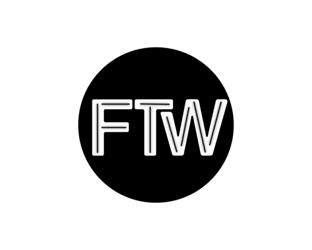
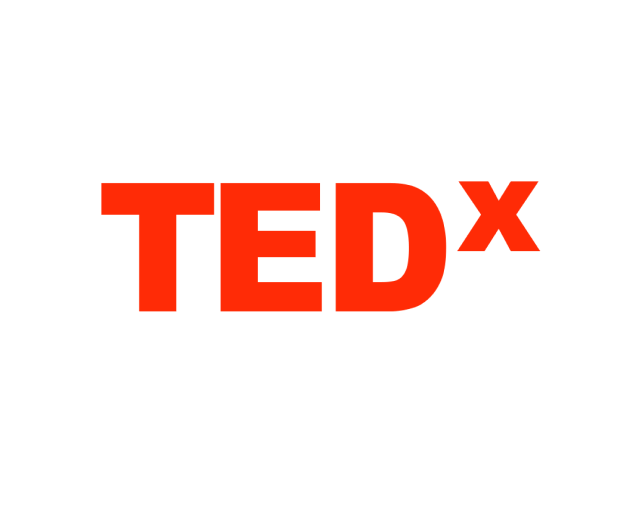
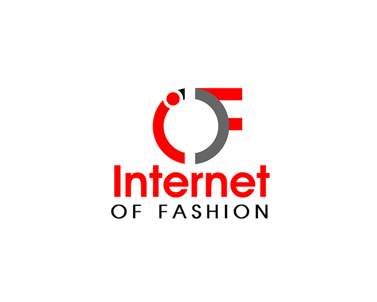
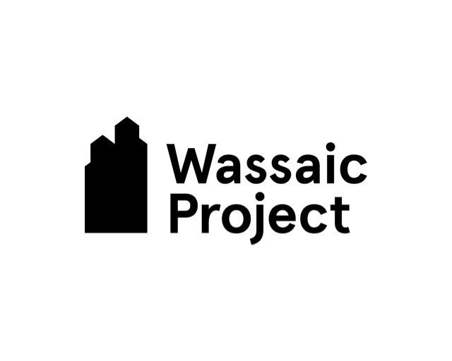
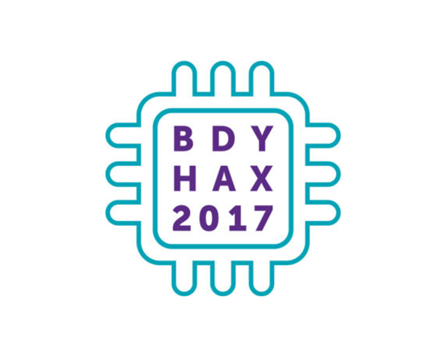
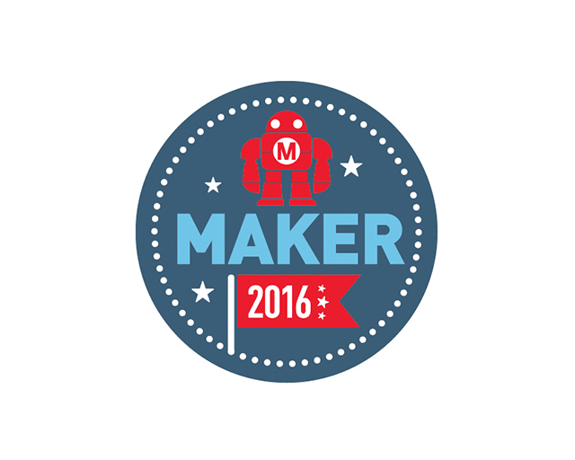
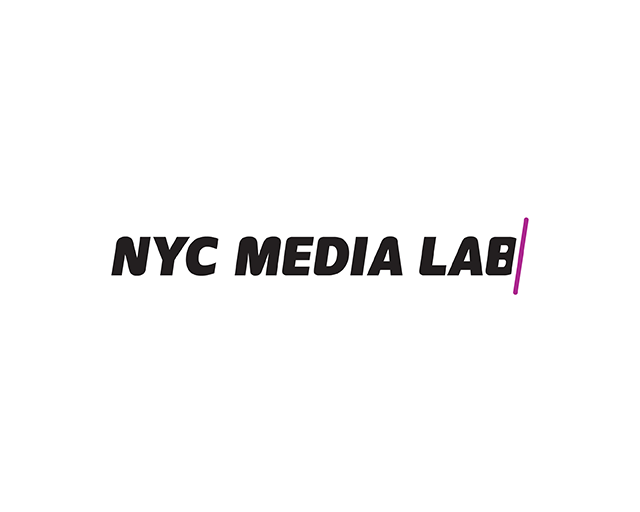
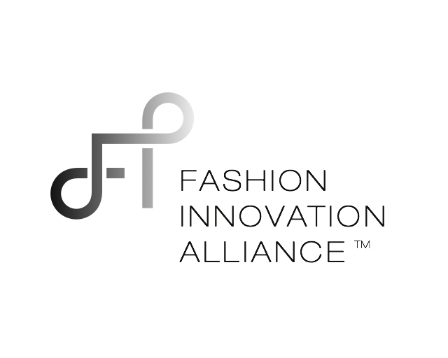

Master’s Thesis: Cyberknitics
A garment that translates the rhythm of knitting into sound
Will Cyborgs Knit?
Cyberknitics is the study of the relationship between craft, technology, and humans. Crafting is calming, healing, communal, expressive and empowering. It fills a basic human desire that transcends its utility. My work explores what it means to be a crafter now, and what it will mean in the future.
My project is a harness-like vestment that translates the motion of knitting into sound. As someone who knits, I have become increasingly interested in how to capture and convey the natural rhythm of the craft. The music is meant to inspire a stronger connection between the knitter and their process, and to invite the audience to engage with the spiritual practice of creating something from nothing.
About the Fabrication
This garment detects the movement of the hand which generates sound. As the wearer knits, they can hear their own rhythm and respond to it. Buttons on the forearm allow the user to alter the sound. The sound produced can be heard through a speaker or headphones.
I constructed the harness and arm-piece from leather, then hand-stitched the components in place. The circuit is composed of a combination of pre-made and custom-designed circuit boards. The design is meant to be modular, flexible, comfortable, and evocative.
Talks
-

Keynote Speaker and Guest Panelist
Fashion Tech Week New York
Microsoft Experience Center - New York, NY
September 2017
-

The Future is Soft
TEDxVilniusED
Vilnius Tech Park - Vilnius, Lithuania
January 2017
-

Wearable Tech
Internet of Fashion Meetup
Grind Spaces - New York, NY
June 2016
-
Will Cyborgs Knit?
ITP Thesis Week
NYU Tisch School of the Arts - New York, NY
May 2016
Exhibitions
-

eTextile Spring Break
Wassaic Project - Wassaic, NY
January 2018
-
Fashion Tech Week NY
New York, NY
September 2017
-

Body Hacking Con
Austin Convention Center - Austin, TX
January 2017
-

World Maker Faire
New York Hall of Science - Queens, NY
October 2016
-

NYC Media Lab Summit
Lerner Hall at Columbia University - New York, NY
September 2016
-

Fashion Innovation Alliance Fashion+Tech Showcase
ROA Building on Capitol Hill - Washington, DC
June 2016
-
ITP Student Showcase
NYU Tisch School of the Arts - New York, NY
May 2016